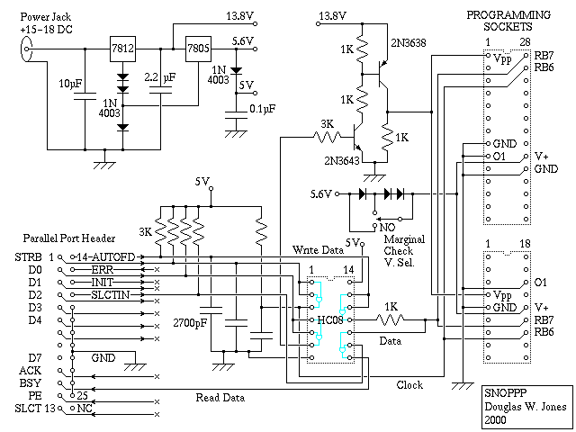
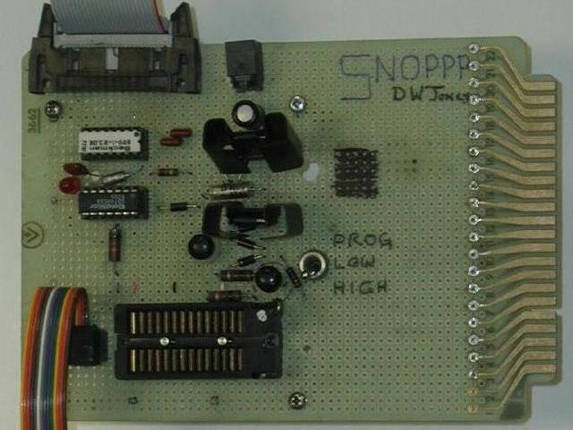
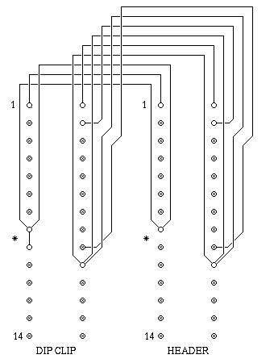
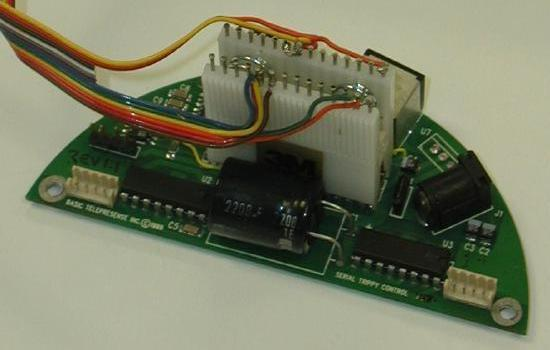

Pic Cross Development Support Tools
Part of
the Cross Development Tool Collection
|
When I set out to do a large-scale PIC-based project (paid work!), I found that most of the PIC tools ran only under Windows, and I found that the Linux tools all seemed to demand that I spend several weeks upgrading my antiquated Linux system. I had a decent assembler sitting around already (the machine-independent SMAL assembler), so I spent a few days hacking it into shape as a PIC assembler.
It's written in C, uses the command line interface, and has essentially no system dependencies, other than the requirement for a C compiler. (No need for up-to-date versions of lex, yacc, make or any of those other tools!)
It should assemble code for all of the 14-bit PIC microcontrollers, and include files are provided for the PIC16C72, PIC16C73, PIC16C74, PIC16C76, and PIC16C77. (I happened to be developing code for the 16C76.)
The code distribution is in the form of a shell archive that includes source code, header files and a very minimal manual.
The commercial PIC programmers all seem to be based on Windows, and I wanted to work under Linux, so I went shopping for a decent programmer. The NOPPP from Covington Innovations looked good, so I built the NOPPP-2 (it uses a an IC where the original uses a handful of diodes). This, however, didn't work with the UV EPROM based PICs I was working with, for several reasons:
First, it didn't include the marginal voltage check facility required for production quality PIC programmers (you program with a 5-volt supply, then read back the program with a 5.6-volt supply and a 3.8-volt supply in order to verify the quality of the programming). So, I added an assortment of 1N4003 diodes to generate these voltages.
Second, the programming voltage Vpp used for the UV EPROM-based PICs must sit in a narrower range than that required for the flash EEPROM PICs. They want 14.0 volts, and I found empirically that 13.8 works. In addition, programming the UV EPROM versions seems to draw real power on the 14 volt programming supply, so a series resistor between the regulator and the chip wasn't acceptable. Therefore, I added another transistor to the programming voltage supply. This had the net effect of inverting the programming signal to the noppp, and this, in turn, required me to change the driver code.
I've called my modified NOPPP the Son of NOPPP, or SNOPPP. Here's the schematic and a picture of the finished product:


In the spirit of the original NOPPP, my SNOPPP was made using junk parts. I happened to have a resistor network handy, so all the 3K resistors shown in the schematic are in the white dual-inline package on the upper left of the photo. There were extras there, so I used one for a pilot-light, the LED shown in the photo.
I should note that I use this programmer for in-circuit programming, with a 3M DipClip on the end of an 8 inch ribbon cable to do the programming. I had to add a terminator to the clock line to the PIC -- it didn't work reliably without this! I put the terminator in the SNOPPP, not on the cable assembly, so you just plug it into the socket on the SNOPPP and do your in-circuit programming.
The schematic for the clip I should have built for programming 28-pin PICs is shown here, along with the photo of the clip I actually used, clipped onto a PIC16C76 on the motor control board I was paid to develop. My programmer cable has a dedicated 14-pin socket, where I ought to have simply made it to plug into the programmer using a header with the same pinout as the PIC, as shown in the schematic.


Note that, with this approach to in-circuit programming, the programmer provides power not only to the PIC but to everything that's wired to the same +5 supply circuit as the PIC. In designing the circuitry, you'd better be very sure that this won't cause problems! In addition, you're applying power to the PIC with the crystal oscillator or ceramic resonator attached, and this will, naturally, resonate when you apply power! Therefore, the programming clip grounds the O1 pin to prevent oscillation; this is also grounded on the programmer's socket, but it's better to ground it with a short local jumper (marked with an asterisk in the schematic) than with a long wire.
Note also that the cable is arranged so that every signal wire is surrounded on both sides with ground wires, providing at least a partial shield.
The Linux driver software for the SNOPPP this is available as a UNIX shell archive. This driver must be installed with root privilege, because it bypasses the standard driver for the parallel port and goes straight to hardware.
This driver has only been tested with the 16C76, but it should also work with the other 14-bit Flash EEPROM PICs if you tell it that they are 16C76 chips. In addition, it still contains Covington's code to support the 16C84, 16F84 and 16F83 chips, but this is untested.
In addition to changing the original NOPPP driver to invert the Vpp line, I also had to change it so that it used the adaptive burner logic Microchip recommends for the UV EPROM-based PICs. This requires programming in a series of program steps, reading back the data after each step and repeating the process until the data read back matches the data being burnt in.
Thinking about the above issue, I realized that some changes in the hardware would make it better. For example, if it uses D0 and D1 instead of Autofd and D0 for output, if it uses PE for input instead of BSY, I could have modified the thing to run under the standard LINUX parallel port driver, so it wouldn't require peeking and poking to run the port. This would actually make it run faster! I didn't make any of these changes because I wanted to spend my time earning money and not hacking with my support tools.
It would also be fun to use D2 and D3 to control the voltage, so that the software could do the marginal testing without requiring the user to flip the marginal test switch before each verification pass.
As I mentioned, I was doing this work for pay. The PIC software I've developed is mostly proprietary, but I didn't charge them for the binary to decimal conversion code that I included in the project, so I've put it up on the web. This is but one fragment of the large program I developed using the SMALpic assembler and the SNOPPP programmer. Yes, it runs in the board shown in the picture of my in-circuit programming rig. The board runs a pair of stepping motors inside a tilt-pan-zoom webcam mount that I had a large part in designing.
Don McKenzie maintains a good index of PIC resources. Eric Raymond also has a good list. Programmer's Heaven maintains an index of PIC materials submitted by their readers.